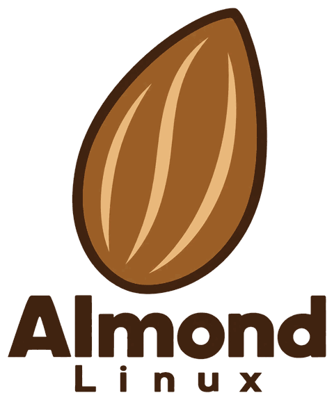

Almond Linux
Simple. Powerful. Yours.
A new Linux distribution project built around simplicity, stability, and freedom.
Currently in early development.
Status ledger · 15 October 2026
- project
- Almond Linux
- status
- early development
- base
- Debian 13 ‘trixie’ (planned)
- editions
- AALLDM · AALDM (planned)
- iso
- none yet
- next
- 0.1 ‘Marcona’ – first AALDM ISO
01 · about
About Almond
Almond Linux is an independent Linux distribution project focused on simplicity, stability, performance, and freedom. The initial operating system will be based on Debian. The long-term goal is for Almond to become a fully independent distribution of its own.
Right now Almond is a logo, two public repositories, and an AALDM build that produced its first test ISO on 17 October 2026. That ISO booted in a VirtualBox virtual machine, in both legacy BIOS and UEFI mode. It is an experiment: not released, not offered for download, and not yet tried on a real PC. This site tells you exactly where things stand, and nothing more than that.
Logbook
- The AALLDM visual design is approved as a set of design mockups. No AALLDM system has been built.
- First AALDM test ISO built, and booted in a VirtualBox virtual machine in legacy BIOS and UEFI mode. Idle memory in that single test: 413 MiB with 2 GB of RAM, above the 300 MB target (test report). It is an experiment: not released and not tried on a real PC.
- AALDM build configuration and the first Almond Pure source files published: icon theme with folder colours, window themes, the Almond Launcher and wallpapers. Not built or tested yet.
- AALDM chosen as the first edition: LXQt with the Openbox window manager on X11, for 64-bit PCs.
- Almond Pure, the visual design for AALDM, approved as a set of design mockups.
- First public repositories published on GitHub, under the MIT License: the build configuration and this website.
- Release codenames chosen: Spanish almond varieties, starting with ‘Marcona’.
- Two editions defined: AALLDM for newer PCs, AALDM for older ones.
- The AlmondLinux organisation is created on GitHub.
- The almond logo is adopted as the official mark.
A selection, newest first. The full log is on the development page.
02 · vision
Our vision
What we want Almond to become in the long run. These are goals for the finished system, not features you can use today.
- Simple.
- A clean desktop with sensible defaults. Someone new to Linux should be able to get going without reading a manual.
- Powerful.
- The whole Debian package archive underneath, for people who want to go further.
- Yours.
- Free and open-source software, no tracking, and nothing you can’t change.
03 · editions
Two editions, one Almond
A new PC and a ten-year-old laptop deserve different systems. Almond is planned in two editions, built from the same base and the same values.
AALDM is in progress as 0.1 ‘Marcona’, and its first test ISO has booted in a virtual machine. AALLDM’s visual design is approved, but no AALLDM system has been built. The details below will only firm up as the work does.
Edition · large
AALLDM
A All Large Linux Distribution Model
The full Almond: a bigger, more modern desktop for newer PCs, with room for the nicer touches.
- for
- newer PCs
- desktop
- not chosen yet
- status
- design approved · no ISO
Edition · little
AALDM
A All Little Distribution Model
The light Almond: made for older and low-power PCs. The aim is a system that stays quick on hardware other systems have left behind. It is the edition being built first.
- for
- older and low-power 64-bit PCs
- desktop
- LXQt + Openbox
- status
- in progress · test ISO only
04 · roadmap
Development roadmap
Five steps, from a first bootable image to a stable release. Each named release takes its codename from a Spanish almond variety. Nothing here is marked done, because nothing is done yet.
- Almond 0.1 ‘Marcona’ First bootable Debian-based ISO Status: In progress First test ISO built and booted in a VirtualBox virtual machine on 17 October 2026. Still to do: a real PC, the full memory measurements and the remaining checks.
- Almond 0.2 ‘Largueta’ Custom Almond branding, wallpaper, themes, and system identity Status: Planned
- Almond 0.3 ‘Valencia’ Customized desktop experience Status: Planned
- Almond 0.5 Graphical installer and testing Status: Planned
- Almond 1.0 First stable public release Status: Planned
The plan for 0.1
- Base: Debian Stable, currently Debian 13 ‘trixie’.
- Built with Debian live-build.
- First edition: AALDM, for 64-bit PCs. The plan is one ISO for both older BIOS PCs and newer UEFI PCs.
- Desktop: LXQt with the Openbox window manager on X11, chosen to keep memory use low.
- Goals: under 300 MB of memory when idle, and PCs with 1 GB where feasible. Targets, not measurements.
- Tested in virtual machines before it goes near real hardware.
After 1.0: going independent
Debian is the starting point, not the destination. Step by step, Almond plans to replace what it borrows:
- An Almond package repository for Almond’s own software.
- Building packages from source on Almond’s own build system.
- A fully independent Almond, no longer based on Debian.
This is a long-term goal. No dates are promised.
05 · downloads
Downloads
Almond Linux is currently in development. No official ISO is available yet.
When a release exists it will be published here and on GitHub, with checksums. Until then, any file calling itself an Almond Linux ISO did not come from this project.
06 · open source
Open source
Almond is developed in the open: its build configuration and this website are published on GitHub for anyone to read.
It builds on free and open-source software, mainly Debian packages, and every upstream component keeps its own license and copyright. Almond does not claim ownership of any upstream software.
Almond’s own files are released under the MIT License. The Almond Linux name and logo are not covered by it.

07 · get involved
Get involved
Almond is developed in the open on GitHub.
The main repository is github.com/
The easiest way to follow along is to watch the repository on GitHub.
Follow Almond on GitHub